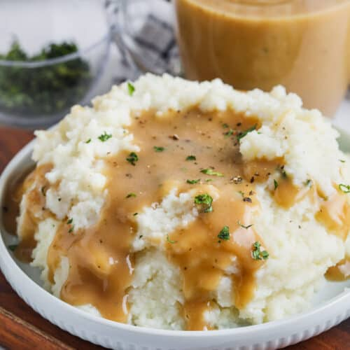
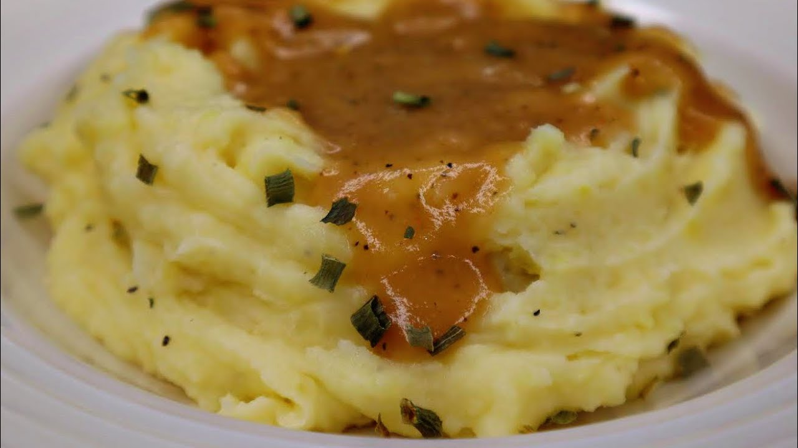

Mashed Potatoes and Gravy

If you love good, old-fashioned mashed potatoes, this is the perfect recipe. Made with Idaho potatoes, milk, butter, and optional garlic, this go-to recipe for simple, homemade mashed potatoes is a classic holiday dish. Learn how to make mashed potatoes that come out smooth, creamy, and delicious every time. Serve with gravy or extra butter on top.

Ingredients:
- 2 pounds baking potatoes, peeled and quartered
- 13 cloves garlic, peeled, or to taste (Optional)
- 1 cup milk
- 2 tablespoons butter
- salt and ground black pepper to taste
How to Make Mashed Potatoes and Gravy
Here's what I love about this recipe: This pie is incredibly approachable, even for novice bakers. Of course, you can add to the steps below by making your own pie crust, blind baking your crust, etc., but the whole process can really be boiled down to three simple steps.
- Boil the potatoes: Add the potatoes and garlic to a large pot of salted, boiling water. Reduce the heat and simmer until the potatoes are tender.
- Heat the milk: Heat the milk and butter in a saucepan until the butter is melted.
- Mash the potatoes: Drain the potatoes, then return them to the pot. Slowly add the warm milk mixture, mashing with a potato masher or blending with a mixer until the potatoes are smooth and creamy. Season to taste.